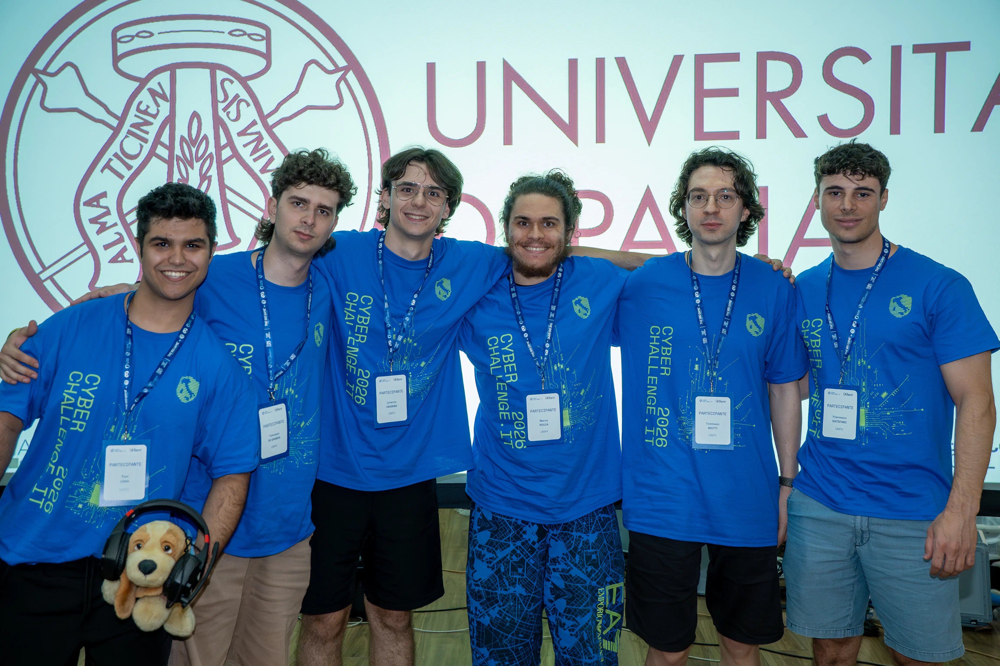
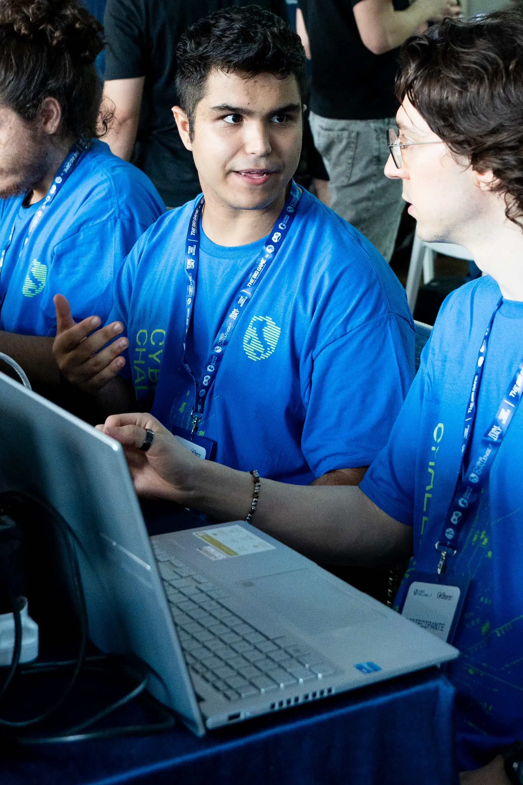

ANALISI, CODICE E
SICUREZZA.
Una raccolta di progetti accademici e personali incentrati su sviluppo software, architetture di rete e sicurezza informatica.


CyberChallenge.it
Finale Nazionale di Cybersecurity CyberChallenge.it in cui ho avuto ruolo di sysadmin e webpenetration tester


JustItis
Sviluppo di una applicazione per le ordinazioni al bard della scuola.
Con annessa struttura del backend(Laravel) e database (MySQL) e analisi vulnerabilitá

New Lan Cardano
Riconfigurazione della LAN del istituto tecnico ITIS G.Cardano
ingegnerizzazione piano indirizzamento ip Meaningful Addressing


NoncifregheRETE
Progetto di divulgazione sui pericoli di inteternet ai piú piccoli tramite giochi interattivi e robotica


ENERGY LOAD PREDICTION
Previsione del carico energetico basata su serie temporali e 25 sensori ambientali.
Implementato con modelli XGBoost, MLP, CNN-LSTM e un Meta-Modello di Blending.
PRONTO PER NUOVE SFIDE?
Sono aperto per opportunità di stage o collaborazioni per mettere in pratica le mie competenze in ambito software e cybersecurity.